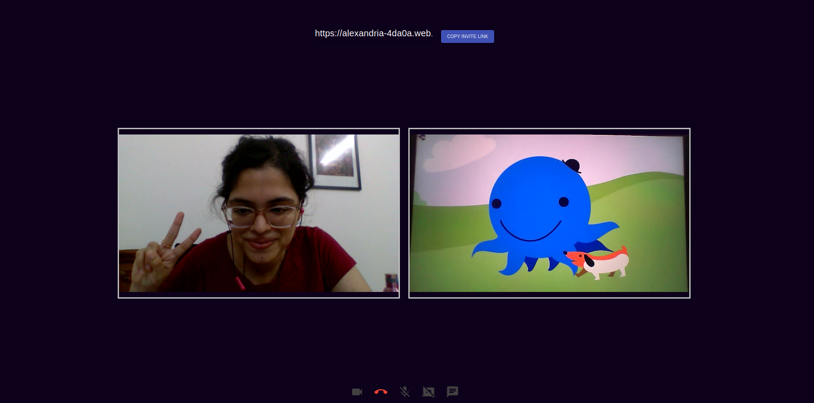
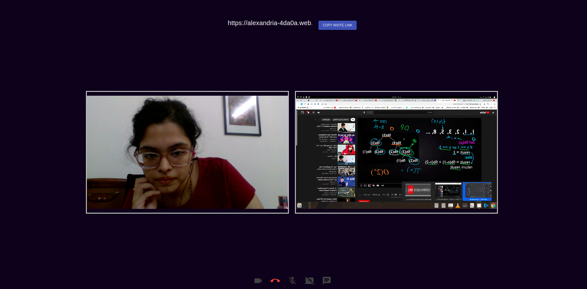
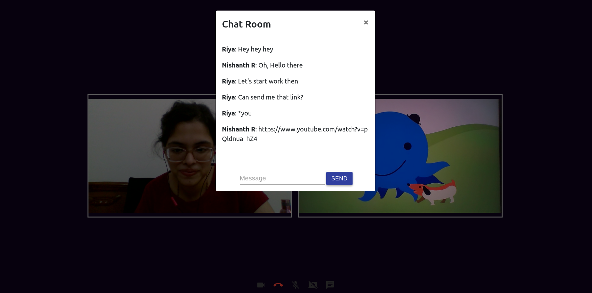

Start a Meeting
One can start a meeting from any room, simply click on the hyperlink in the Header. You'll be redirected to the pre-meeting UI, prompting you to fill in your name afterwhich you're in!
Remote participation is facilitated! (Ps: that's my friend holding up Oswald😁 in the second video stream) 
Explore
-
To have others join in, copy the
invite linkfrom the top and share (You can drop the link in the Room-Chat!) -
When a participant joins, it may take some seconds to see their video-stream.
-
Just like any other Meeting functionality, features like
mute/unmute, switchvideo on/offandshare the screenare available.
Share screen: 
- There is an
inbuilt chatfunctionality as well. The chats from a meeting are displayed asMeeting Logsin that particular Room's ChatBox after a meeting ends.
Chat functionality: 
Working
-
Using
PeerJSandSocket.ioto write server-side code inExpressJS:const express = require("express"); const app = express(); app.use(express.json()); var server = http.Server(app); var io = require("socket.io")(server, { secure: true, allowEIO3: true }); const { ExpressPeerServer } = require("peer"); const peerServer = ExpressPeerServer(server, { debug: true, }); app.use("/peerjs", peerServer); socket.on("join-call", (path) => { if (connections[path] === undefined) { connections[path] = []; } connections[path].push(socket.id); timeOnline[socket.id] = new Date(); for (let a = 0; a < connections[path].length; ++a) { io.to(connections[path][a]).emit( "user-joined", socket.id, connections[path] ); } if (messages[path] !== undefined) { for (let a = 0; a < messages[path].length; ++a) { io.to(socket.id).emit( "chat-message", messages[path][a]["data"], messages[path][a]["sender"], messages[path][a]["socket-id-sender"] ); } } -
In Client-side,
socket.io-clienthandles requests. A snippet from/client/src/views/roomCall.jsconst io = require("socket.io-client"); const server_url = "https://alexandria-server.azurewebsites.net"; // when a new user joins call: connectToSocketServer = () => { console.log("want to connect"); socket = io.connect(server_url, { secure: true, }); socket.on("signal", this.gotMessageFromServer); socket.on("connect", () => { socket.emit("join-call", window.location.href); socketId = socket.id; socket.on("chat-message", this.addMessage); socket.on("user-left", (id) => { let video = document.querySelector(`[data-socket="${id}"]`); if (video !== null) { elms--; video.parentNode.removeChild(video); let main = document.getElementById("main"); this.changeCssVideos(main); } }); -
Remote Participation is configured in
PeerJSwith the help ofSTUNservers like so:const peerConnectionConfig = { iceServers: [ { urls: [ "stun:stun01.sipphone.com", "stun:stun.ekiga.net", "stun:stun.fwdnet.net", ], }, ], };
Troubleshooting
- Please be patient😄 while using the Meeting functionality, as I'm using a
STUNserver to facilitate remote user participation, and have written my own server-side code (rather than use a service likeJitsi,Vidyo, orTwilio)